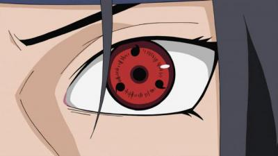
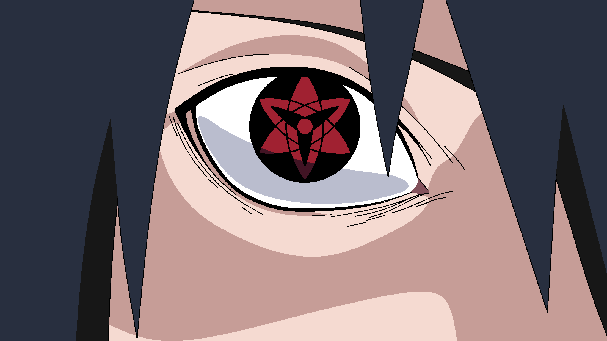
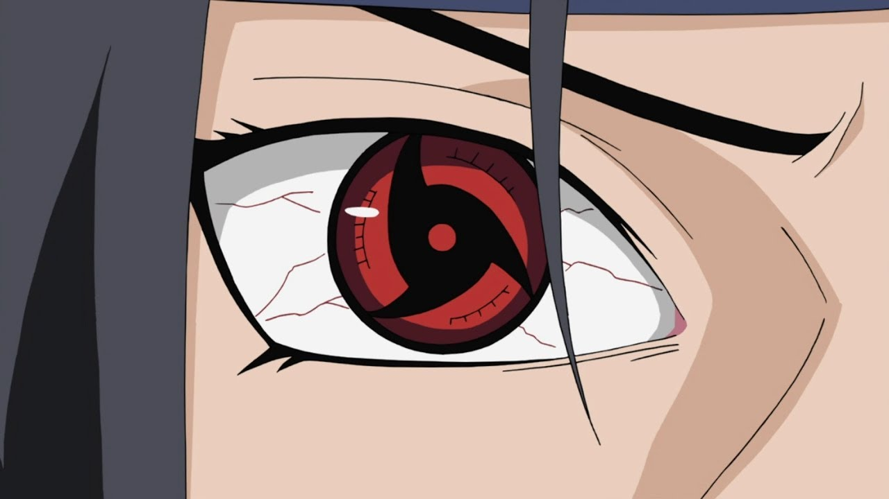
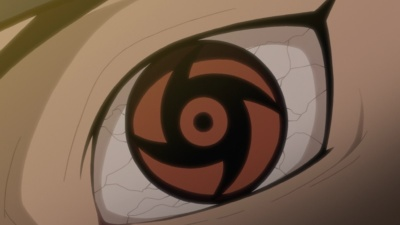

| Глаз |
Владелец |
Описание |
Изображение |
| Трехтомойный шаринган |
- Учиха Мадара
- Учиха Саске
- Учиха Обито
- Учиха Итачи
- Ооцуцуки Индра
- Учиха Шисуи
|
Шаринга́н (写輪眼, "Копирующий вертящийся глаз")
— Кеккей Генкай и Додзюцу клана Учиха, которое выборочно
проявляется у его представителей. Оно почитается как одно из
Сандай Додзюцу (三大瞳術, "Три великих глазных техники"), наряду с
Бьякуганом и Риннеганом. Хотя способности Шарингана произошли
от Ринне Шарингана Отсутсуки Кагуи, в качестве отдельного Додзюцу
он впервые пробудился у Отсутсуки Индры.
|
 |
| Мангеке Шаринган Мадары |
Учиха Мадара |
Мадара Учиха был первым Учихой, пробудившим
Мангекьё Шаринган. К сожалению способности его
глаз неизвестны. Он был способен использовать
Сусаноо.
|
 |
| Мангеке Шаринган Саске |
Учиха Саске |
Саске Учиха пробудил свой Мангекьё Шаринган
через несколько недель после смерти старшего брата
Итачи и осознания его истинных намерений. С помощью
левого глаза он способен использовать Аматерасу.
Правым же глазом он может изменять форму чёрного пламени
или же затушить его. Поскольку он пробудил оба своих
Мангекьё, он получил доступ и к Сусаноо.
|
 |
| Мангеке Шаринган Итачи |
Учиха Итачи |
Итачи Учиха пробудил свой Мангекьё Шаринган после того,
как стал свидетелем самоубийства своего лучшего друга Шисуи Учихи,
незадолго до Резни Клана Учиха. С помощью левого Мангекьё он был способен
использовать Цукуёми, очень могущественное гендзюцу, которое искажает
восприятие времени жертвы. Правым Мангекьё он мог использовать Аматерасу,
создавая неугасаемое чёрное пламя в точке, на которой фокусируется его взгляд.
Поскольку Итачи пробудил оба Мангекьё, он был в состоянии использовать и Сусаноо.
Применение Мангекьё довольно пагубно сказывалось на самом Итачи, поэтому если
он использовал его три раза в один и тот же день, то после этого не мог
поддерживать активным даже обычный Шаринган. Через определённое время после
смерти Итачи, его младший брат, Саске Учиха, жаждущий заполучить больше силы,
чтобы убить Наруто, велел Тоби пересадить его глаза себе.
|
 |
| Мангеке Шаринган Обито |
Учиха Обито |
Обито Учиха пробудил Мангекьё Шаринган после смерти Рин Нохары во время
Третьей Мировой Войны Шиноби; сам Обито на тот момент обладал только правым
глазом, однако это событие вызвало одновременное пробуждение Мангекьё и у
Какаши Хатаке, который владел левым глазом Обито. Оба получили доступ к
Камуи, технике, способной телепортировать объекты в или из Измерения Камуи, хотя
немного разными способами. Правый глаз был способен использовать Камуи ближнего
действия, телепортирующее пользователя или тех, с кем он контактирует.
Телепортируя туда отдельные части своего тела, тот обретал своего рода
нематериальность в этом мире и мог проходить сквозь материю. Левый глаз мог
использовать дистанционное Камуи, создавая барьер вокруг цели, который
телепортировал её. В качестве цели для телепортации левого глаза пользователь
также в состоянии избрать самого себя. Во время Четвёртой Мировой Войны Шиноби
обнаружилось, что один из глаз способен нейтрализовать эффект Камуи другого.
|
 |
| Мангеке Шаринган Шисуи |
Учиха Шисуи |
Шисуи Учиха пробудил Мангекьё Шаринган, когда
«позволил своему другу и сопернику умереть». С помощью каждого из своих глаз он
мог использовать Котоамацуками, могущественное гендзюцу, которое манипулирует
мыслями цели, притом без малейшего представления кого-либо, в том числе и самой
жертвы, что ею на самом деле управляют. В аниме, пробуждение обоих
Мангекьё позволило Шисуи использовать Сусаноо.
|
 |
| Мангеке Индры Ооцуцуки |
Ооцуцуки Индра |
В манге, Индра Ооцуцуки был первым пользователем Шарингана и
Мангкьё Шарингана. Неизвестно, каковы были отдельные способности
каждого его глаза, но он был способен использовать Сусаноо.
В аниме, он пробудил свой Мангекьё после убийства двух своих единственных
последователей. Также он продемонстрировал способность применять технику, похожую
по внешнему виду и функционалу на Аматерасу — Хинокагузучи, с помощью левого глаза.
|
.png) |